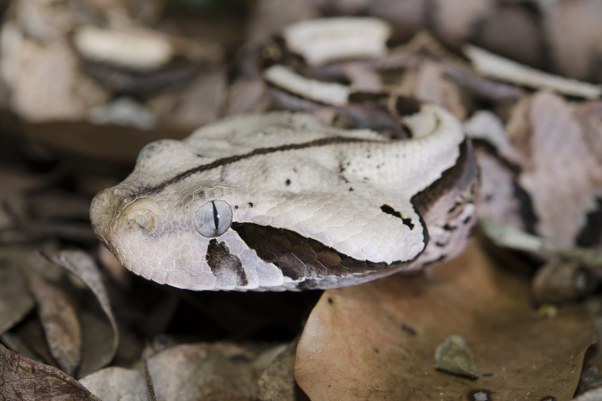
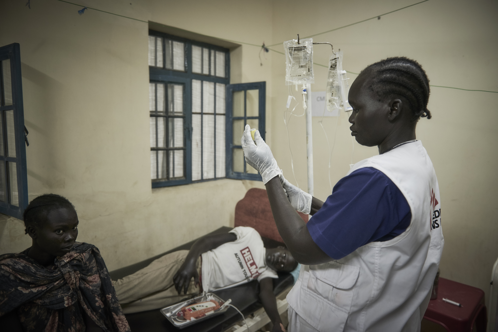
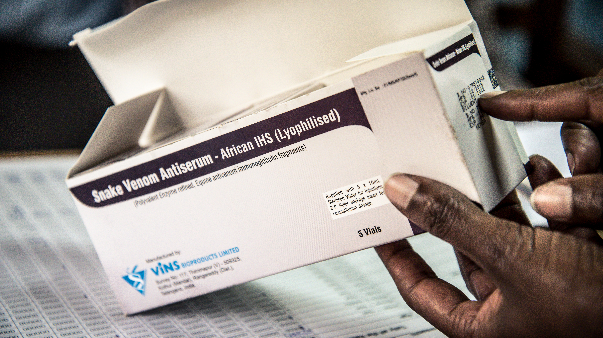

Slangebitt
«Dødelig, men glemt. Hvert år mister tusenvis av mennesker livet etter slangebitt, men helsekrisen forblir lavt prioritert.» Slangebitt er fortsatt et stort og undervurdert problem i verden. Selv om vi har motgift og andre hjelpemidler er ikke alle land like heldige som Norge. Her i Norge er de ikke så vanlige eller dødelige. Dessverre er det ikke sånt med andre land.

Hvor mange blir faktisk påvirket av denne saken.
Hvert år blir rundt 2,7 millioner mennesker bitt av giftige slanger, og rundt 100.000 av disse dør, og rundt 300.000 mister lemmer og får andre varierende funksjonsnedsettelser. Hvert år blir omtrent 7000 pasienter behandlet for slangebitt. Blant de landene som blir behandlet flest pasienter er fra, Den sentralafrikanske republikk, Etiopia og Sør-Sudan som er på toppen. Selv om det finnes behandling for slangebitt, er det dessverre ikke tilgjengelig for de fleste. Penger og avstand er to av de største problemene blant folk som trenger behandling. «Noen sykdommer blir mer glemt enn andre, og slangebitt har alltid hatt lav prioritet på folkehelseagendaen på verdensbasis.»

Hvorfor blir problemet ofte ignorert?
Slangebitt blir ofte glemt fordi det skjer mest i fattige land der folk bor langt unna sykehus. Mange som blir bitt har ikke penger til behandling, og det er lite media som snakker om det. Legemiddelfirmaer lager heller ikke nok motgift, fordi de ikke tjener så mye på det. Derfor får ikke folk den hjelpen de trenger, og problemet fortsetter uten at så mange vet om det.
Leger uten grenser
Leger uten grenser er en nøytral hjelpeorganisasjon som bidrar til å redde liv og lindrer nød. De mottar ikke støtte fra staten, men samler heller inn penger via donasjoner fra enkelte eller firmaer. Dette er for å bevare nøytraliteten deres mot andre land. Organisasjonen ble stiftet i 1971 av leger og journalister i Frankrike, og har sørget for nødhjelp i over 50 år. I dag jobber de i flere enn 70 land, og bærer vitne til det de ser ute på krigsfeltet. «Fordi færre dør når flere vet.»
